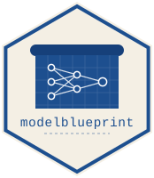

Partial dependence plots
Source:vignettes/partial-dependence-plots.Rmd
partial-dependence-plots.RmdWhat is a partial dependence plot?
A partial dependence plot (PDP) reveals the marginal effect of a single feature on model output, averaging out the influence of all other features. Unlike a one-way plot — which shows raw observed and predicted means per bin — a PDP fixes a feature at a series of values and averages predictions across the full training distribution.
This makes PDPs especially useful for:
- Understanding non-linear feature effects in black-box models
- Comparing the shape of a relationship across competing models
- Diagnosing interactions and unexpected behaviour
The chart has the same dual-axis layout as one-way plots:
- Yellow bars (right axis) — exposure per bin
- Three lines (left axis) — observed mean, in-sample predicted mean, and PDP (marginal effect)
Basic usage
# PDP for driver_age — everything pulled from blueprint slots
pdp(mb, var = "driver_age")On a plain data frame:
Understanding the three lines
The PDP chart shows three lines per feature:
- Observed — exposure-weighted mean of the actual target per bin. This is the same as the one-way plot.
-
Predicted (in-sample) — exposure-weighted mean of
predict(model, data)per bin. Tracks the observed line when the model is well-calibrated. - PDP — the true marginal effect. For each bin midpoint, the feature is fixed at that value across all rows of the training data and predictions are averaged. This isolates the feature’s contribution from correlations with other features.
When the PDP line diverges from the predicted line, it signals that the feature’s in-sample predictions are driven partly by correlations rather than the feature itself.
Controlling bins and sample size
# Coarser view
pdp(mb, var = "driver_age", bins = 8L)PDP computation requires predicting across the full dataset for each
bin. For large datasets, sample_size caps the number of
rows used:
# Use at most 1,000 rows for PDP computation
pdp(mb, var = "vehicle_value", sample_size = 1000L)The default is 10,000. For most models, 1,000 rows gives a stable PDP line at a fraction of the computation cost.
Binning strategy
pdp(mb, var = "vehicle_age", type_agg = "equal_range")Choosing the dataset
pdp(mb, var = "driver_age", set = "train")
pdp(mb, var = "driver_age", set = "test") # out-of-sample PDPComputing the PDP on the test set is a useful check — if the PDP shape changes substantially from train to test, the model may be overfitting to correlations present only in training data.
Returning the data
d <- pdp(mb, var = "driver_age", ret = "data")
head(d)
#> driver_age obs_mean pred_mean exposure pdp_mean global_obs global_pred
#> <char> <num> <num> <num> <num> <num> <num>
#> 1: [18,24] 0.1681360 0.1329939 220.06 0.1329798 0.127725 0.127725
#> 2: (24,29] 0.1040982 0.1287909 182.52 0.1317471 0.127725 0.127725
#> 3: (29,35] 0.1299968 0.1250679 184.62 0.1305258 0.127725 0.127725
#> 4: (35,41] 0.1368570 0.1297973 211.90 0.1292064 0.127725 0.127725
#> 5: (41,47] 0.1182480 0.1284004 211.42 0.1279004 0.127725 0.127725
#> 6: (47,52] 0.1248298 0.1309338 176.24 0.1267148 0.127725 0.127725Columns returned:
| Column | Description |
|---|---|
driver_age |
Bin label (interval string or level name) |
obs_mean |
Exposure-weighted observed mean |
pred_mean |
Exposure-weighted predicted mean |
pdp_mean |
Marginal PDP value |
exposure |
Total exposure in bin |
global_obs |
Dataset-wide observed mean |
global_pred |
Dataset-wide predicted mean |
Compatible model types
pdp() works with any model that implements
predict():
# Poisson frequency GLM
pdp(mb_glm_poisson_freq(), var = "driver_age")
# Random forest
pdp(mb_rf_regression(), var = "wt")
# XGBoost
pdp(mb_xgb_regression(), var = "wt")
# H2O
pdp(mb_h2o_regression(), var = "wt")For H2O models, pdp() connects to the running H2O
cluster automatically and handles the H2OFrame conversion
internally.
Interpreting PDPs
A flat PDP line means the feature has little marginal effect — the model ignores it once other features are controlled for. A sloping line means the feature drives predictions in that direction across the full data distribution, not just where it correlates with other predictors.
For frequency models, PDP values are on the claim frequency scale. A
PDP that rises from 0.05 to 0.20 across the driver_age
range means the model assigns substantially higher expected claim
frequency to younger drivers, even after controlling for vehicle age,
gender, and other features.